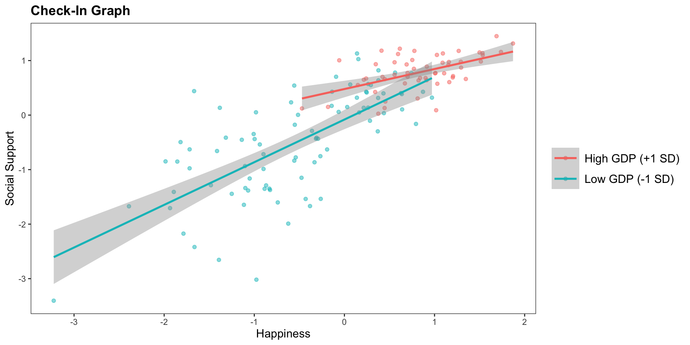
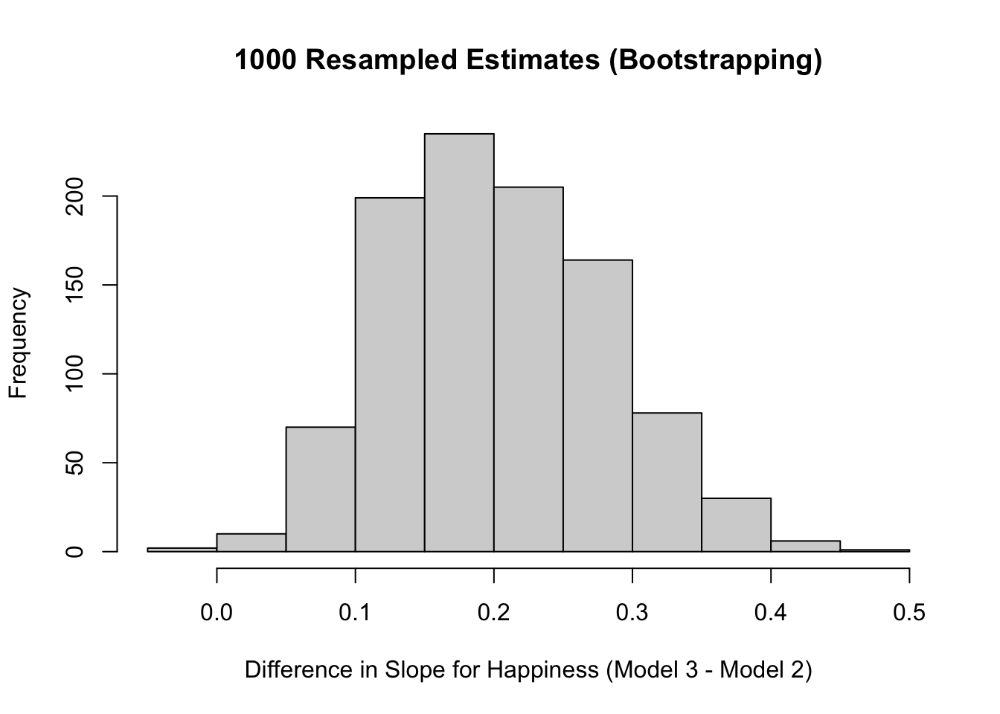
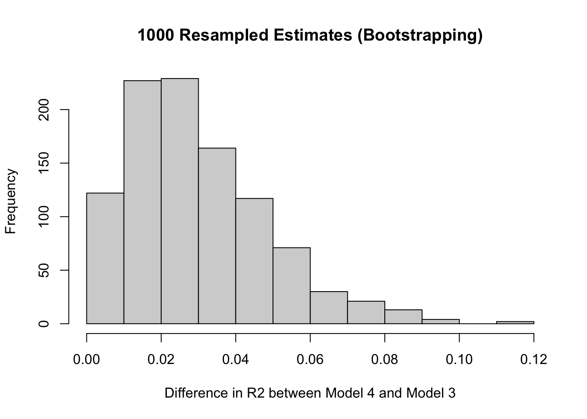
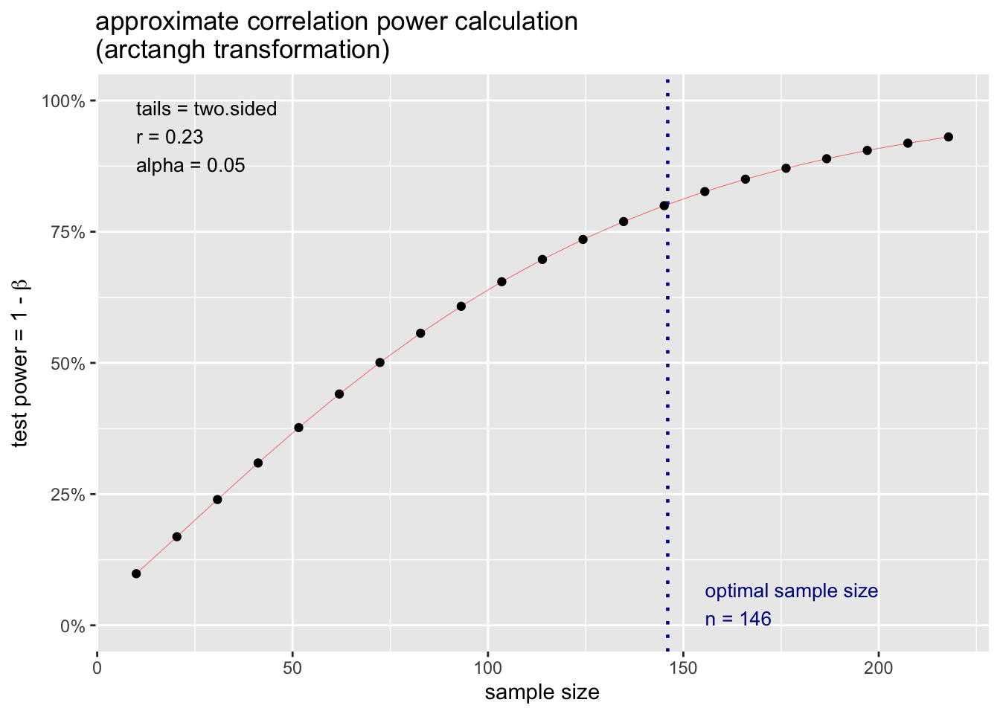

Attaching package: 'huxtable'The following object is masked from 'package:ggplot2':
theme_grey`geom_smooth()` using formula = 'y ~ x'
Attaching package: 'huxtable'The following object is masked from 'package:ggplot2':
theme_grey`geom_smooth()` using formula = 'y ~ x'
Table 1. Predicting Social Support from GDP, Happiness, and their Interaction
| Model 1 | Model 2 | Model 3 | Model 4 | |||||
|---|---|---|---|---|---|---|---|---|
| (Intercept) | 0.00 | (0.06) | 0.00 | (0.05) | 0.00 | (0.05) | 0.08 | (0.06) |
| GDP | 0.73 *** | (0.06) | 0.25 ** | (0.07) | 0.25 ** | (0.07) | ||
| happiness | 0.81 *** | (0.05) | 0.62 *** | (0.07) | 0.60 *** | (0.07) | ||
| happiness:GDP | -0.10 * | (0.05) | ||||||
| N | 140 | 140 | 140 | 140 | ||||
| R2 | 0.53 | 0.66 | 0.69 | 0.70 | ||||
| All continuous variables are mean-centered and scaled by 1 standard deviation. *** p < 0.001; ** p < 0.01; * p < 0.05. | ||||||||
Not required, but in case you wanted to see :)
h <- read.csv("~/Dropbox/!GRADSTATS/Datasets/World Happiness Report - 2024/World-happiness-report-2024.csv", stringsAsFactors = T)
library(ggplot2)
library(jtools)
## Some data cleaning.
h$GDPcat <- ifelse(scale(h$Log.GDP.per.capita) > sd(h$Log.GDP.per.capita, na.rm = T), "High GDP (+1 SD)", "Low GDP (-1 SD)")
h$GDPcat <- as.factor(h$GDPcat)
plot(h$GDPcat)
h$happiness <- h$Ladder.score
h$GDP <- h$Log.GDP.per.capita
ggplot(data = subset(h, !is.na(h$GDPcat)), aes(x = scale(happiness), y = scale(Social.support), color = GDPcat)) +
geom_point(alpha = .5, position = "jitter") +
geom_smooth(method = "lm") + labs(title = "Check-In Graph") + ylab("Social Support") + xlab("Happiness") +
theme_apa()
mod1 <- lm(Social.support ~ GDP, data = h)
mod2 <- lm(Social.support ~ happiness, data = h)
mod3 <- lm(Social.support ~ GDP + happiness, data = h)
mod4 <- lm(Social.support ~ happiness * GDP, data = h)
export_summs(mod1, mod2, mod3, mod4, error_pos = "right", digits = 2, scale = T, transform.response = T)export_summs(mod1, mod2, mod3, mod4, error_pos = "right", digits = 2, scale = T, transform.response = T)| Model 1 | Model 2 | Model 3 | Model 4 | |||||
|---|---|---|---|---|---|---|---|---|
| (Intercept) | 0.00 | (0.06) | 0.00 | (0.05) | 0.00 | (0.05) | 0.08 | (0.06) |
| GDP | 0.73 *** | (0.06) | 0.25 ** | (0.07) | 0.25 ** | (0.07) | ||
| happiness | 0.81 *** | (0.05) | 0.62 *** | (0.07) | 0.60 *** | (0.07) | ||
| happiness:GDP | -0.10 * | (0.05) | ||||||
| N | 140 | 140 | 140 | 140 | ||||
| R2 | 0.53 | 0.66 | 0.69 | 0.70 | ||||
| All continuous variables are mean-centered and scaled by 1 standard deviation. *** p < 0.001; ** p < 0.01; * p < 0.05. | ||||||||
anova(mod1, mod4)| Res.Df | RSS | Df | Sum of Sq | F | Pr(>F) |
|---|---|---|---|---|---|
| 138 | 7.28 | ||||
| 136 | 4.69 | 2 | 2.59 | 37.5 | 1.06e-13 |
anova(mod3, mod4)| Res.Df | RSS | Df | Sum of Sq | F | Pr(>F) |
|---|---|---|---|---|---|
| 137 | 4.83 | ||||
| 136 | 4.69 | 1 | 0.138 | 4 | 0.0475 |
coef(arm::standardize(mod2, NULL, T))[2] - coef(arm::standardize(mod3, NULL, T))[3]z.happiness
0.1890785 summary(mod3)$r.squared - summary(mod2)$r.squared[1] 0.02523017#|echo: true
slopes <- array()
r2s <- array()
for(i in c(1:1000)){
h2 <- h[sample(1:nrow(h), nrow(h), replace = T), ]
mod1x <- lm(Social.support ~ GDP, data = h2)
mod2x <- lm(Social.support ~ happiness, data = h2)
mod3x <- lm(Social.support ~ GDP + happiness, data = h2)
mod4x <- lm(Social.support ~ happiness * GDP, data = h2)
slopes[i] <- coef(arm::standardize(mod2x, NULL, T))[2] - coef(arm::standardize(mod3x, NULL, T))[3]
r2s[i] <- summary(mod3x)$r.squared - summary(mod2x)$r.squared
}mean(slopes)[1] 0.2018789sd(slopes)[1] 0.0776968c(mean(slopes) + sd(slopes),
mean(slopes) - sd(slopes))[1] 0.2795757 0.1241821hist(slopes, main = "1000 Resampled Estimates (Bootstrapping)",
xlab = "Difference in Slope for Happiness (Model 3 - Model 2)")
mean(r2s)[1] 0.02975732sd(r2s)[1] 0.01880133c(mean(r2s) + sd(r2s),
mean(r2s) - sd(r2s))[1] 0.04855865 0.01095599hist(r2s, main = "1000 Resampled Estimates (Bootstrapping)",
xlab = "Difference in R2 between Model 4 and Model 3")
#|echo: true
m4z <- arm::standardize(mod4, NULL, TRUE)
summary(m4z) #
Call:
lm(formula = z.Social.support ~ z.happiness * z.GDP, data = h)
Residuals:
Min 1Q Median 3Q Max
-1.06566 -0.13843 0.00694 0.14130 1.02959
Coefficients:
Estimate Std. Error t value Pr(>|t|)
(Intercept) 0.03825 0.03062 1.249 0.21367
z.happiness 0.59678 0.07394 8.071 3.27e-13 ***
z.GDP 0.24570 0.07390 3.325 0.00114 **
z.happiness:z.GDP -0.20313 0.10155 -2.000 0.04746 *
---
Signif. codes: 0 '***' 0.001 '**' 0.01 '*' 0.05 '.' 0.1 ' ' 1
Residual standard error: 0.2787 on 136 degrees of freedom
(3 observations deleted due to missingness)
Multiple R-squared: 0.696, Adjusted R-squared: 0.6893
F-statistic: 103.8 on 3 and 136 DF, p-value: < 2.2e-16#|echo: true
sm <- summary(m4z) # saving this as an object
sm$coefficients # tadaa Estimate Std. Error t value Pr(>|t|)
(Intercept) 0.03825221 0.03061657 1.249396 2.136663e-01
z.happiness 0.59678009 0.07393839 8.071316 3.271081e-13
z.GDP 0.24570006 0.07389917 3.324801 1.137471e-03
z.happiness:z.GDP -0.20313089 0.10154906 -2.000323 4.745671e-02mtval <- sm$coefficients[4,3]#|echo: true
qt(.025, df = 140) # [1] -1.977054mcut <- qt(.025, 140) # saving this value
pt(mtval - mcut, df = 136, lower.tail = F) # our power.[1] 0.5092651What sample size is needed for a slope of r = .23?
library(pwr)
pwr::pwr.r.test(r = .23, power = .80, alternative = "two.sided")
approximate correlation power calculation (arctangh transformation)
n = 145.2367
r = 0.23
sig.level = 0.05
power = 0.8
alternative = two.sidedp.ex <- pwr.r.test(r = .23, power = .80, alternative = "two.sided")
plot(p.ex)
The cause and effect are contiguous in space and time.
The cause must be prior to the effect. (no reverse causation)
There must be a constant union betwixt the cause and effect. (“Tis chiefly this quality, that constitutes the relation.”) (no random chance)
The same cause always produces the same effect, and the same effect never arises but from the same cause. (not “just” some third variable)
RECAP : the manipulation (A/B Testing) :
researchers create multiple groups (conditions) and change ONE THING (the IV) about a person’s experience in each group & observe the result (the DV).
treatment / experimental condition : the IV is present (the change happens)
control / comparison condition : the IV is absent (the default experience / no change)
KEY IDEA : the comparison group matters!
a 3 hour stats class DECREASES boredom compared to…
a 3 hour stats class INCREASES boredom compared to…


Question : Will the number that people see BEFORE making their own rating influence their decision?
Theory :